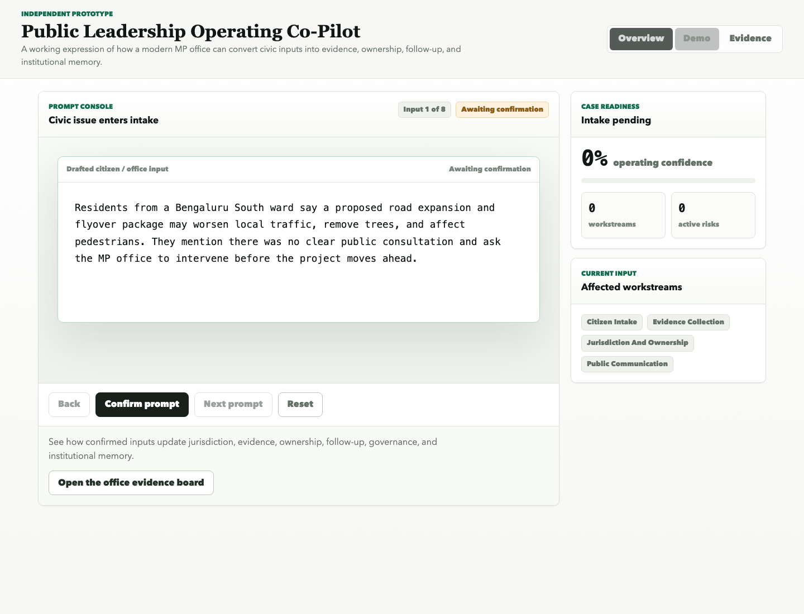

Inputs arrive in many forms
Citizens may describe the same issue through free text, voice, photos, location pins, ward names, or partial landmarks.
Independent Prototype
A working expression of how a modern MP office can convert civic inputs into evidence, ownership, follow-up, and institutional memory.

Modern MP Office Operations
Citizen issues, scheme updates, field reports, public consultations, and parliamentary questions arrive with incomplete context. The office needs a way to preserve facts, identify jurisdiction, assign follow-up, and keep learning across every case.
The Product Idea
The prototype simulates how an MP office can confirm a drafted civic input and update the workstreams required for responsible action: jurisdiction, evidence, stakeholders, public communication, parliamentary research, privacy, and institutional memory.
Messy citizen notes, voice inputs and photos become structured issue clusters with facts, evidence, ownership and next questions.
The system separates what the office can do, what must be escalated, what needs public consultation, and what requires human approval.
Each case leaves behind templates, evidence standards, closure patterns, and reusable knowledge for future staff and volunteers.
Defined Demo Use Case
The demo follows a public input about a road infrastructure proposal, missing consultation records, traffic concerns, and unclear authority. The co-pilot helps the office convert that input into an evidence-backed route for review, escalation, communication, and institutional learning.
Prompt Console
See how confirmed inputs update jurisdiction, evidence, ownership, follow-up, governance, and institutional memory.
Open the office evidence boardSelected Workstream
Workstreams Updated
The office operating model has been updated.
Office Interpretation